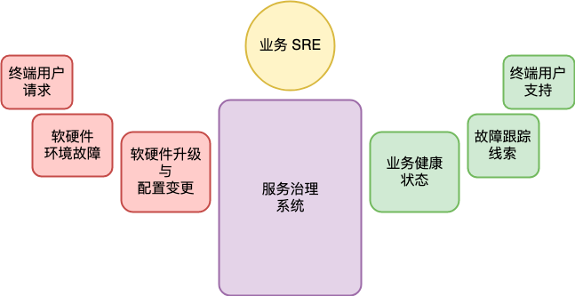
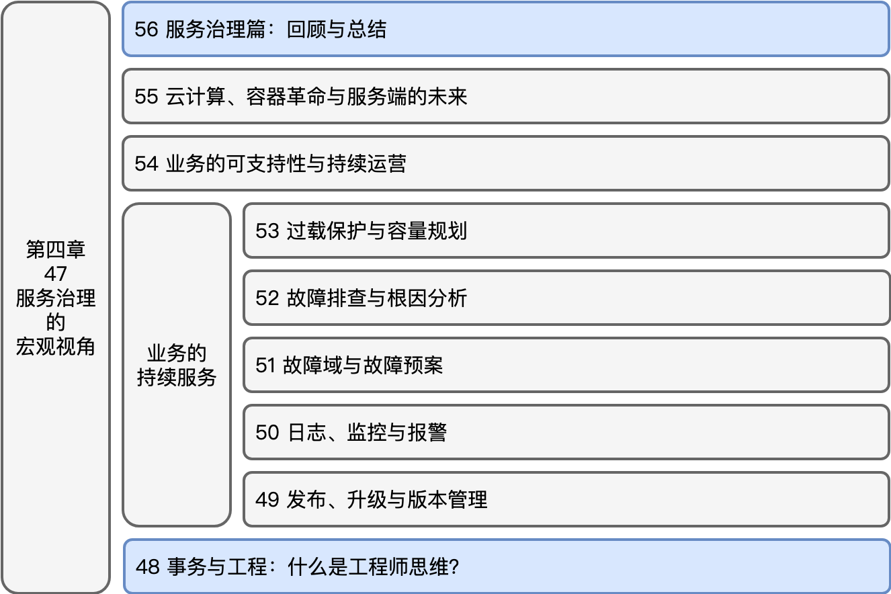

- 00 开篇词 怎样成长为优秀的软件架构师？.md.html
- 01 架构设计的宏观视角.md.html
- 02 大厦基石：无生有，有生万物.md.html
- 03 汇编：编程语言的诞生.md.html
- 04 编程语言的进化.md.html
- 05 思考题解读：如何实现可自我迭代的计算机？.md.html
- 06 操作系统进场.md.html
- 07 软件运行机制及内存管理.md.html
- 08 操作系统内核与编程接口.md.html
- 09 外存管理与文件系统.md.html
- 10 输入和输出设备：交互的演进.md.html
- 11 多任务：进程、线程与协程.md.html
- 12 进程内协同：同步、互斥与通讯.md.html
- 13 进程间的同步互斥、资源共享与通讯.md.html
- 14 IP 网络：连接世界的桥梁.md.html
- 15 可编程的互联网世界.md.html
- 16 安全管理：数字世界的守护.md.html
- 17 架构：需求分析 (上).md.html
- 18 架构：需求分析 (下) · 实战案例.md.html
- 19 基础平台篇：回顾与总结.md.html
- 20 桌面开发的宏观视角.md.html
- 21 图形界面程序的框架.md.html
- 22 桌面程序的架构建议.md.html
- 23 Web开发：浏览器、小程序与PWA.md.html
- 24 跨平台与 Web 开发的建议.md.html
- 25 桌面开发的未来.md.html
- 26 实战（一）：怎么设计一个“画图”程序？.md.html
- 27 实战（二）：怎么设计一个“画图”程序？.md.html
- 28 实战（三）：怎么设计一个“画图”程序？.md.html
- 29 实战（四）：怎么设计一个“画图”程序？.md.html
- 30 实战（五）：怎么设计一个“画图”程序？.md.html
- 31 辅助界面元素的架构设计.md.html
- 32 架构：系统的概要设计.md.html
- 33 桌面开发篇：回顾与总结.md.html
- 34 服务端开发的宏观视角.md.html
- 35 流量调度与负载均衡.md.html
- 36 业务状态与存储中间件.md.html
- 37 键值存储与数据库.md.html
- 38 文件系统与对象存储.md.html
- 39 存储与缓存.md.html
- 40 服务端的业务架构建议.md.html
- 41 实战（一）：“画图”程序后端实战.md.html
- 42 实战（二）：“画图”程序后端实战.md.html
- 43 实战（三）：“画图”程序后端实战.md.html
- 44 实战（四）：“画图”程序后端实战.md.html
- 45 架构：怎么做详细设计？.md.html
- 46 服务端开发篇：回顾与总结.md.html
- 47 服务治理的宏观视角.md.html
- 48 事务与工程：什么是工程师思维？.md.html
- 49 发布、升级与版本管理.md.html
- 50 日志、监控与报警.md.html
- 51 故障域与故障预案.md.html
- 52 故障排查与根因分析.md.html
- 53 过载保护与容量规划.md.html
- 54 业务的可支持性与持续运营.md.html
- 55 云计算、容器革命与服务端的未来.md.html
- 56 服务治理篇：回顾与总结.md.html
- 57 心性：架构师的修炼之道.md.html
- 58 如何判断架构设计的优劣？.md.html
- 59 少谈点框架，多谈点业务.md.html
- 60 架构分解：边界，不断重新审视边界.md.html
- 61 全局性功能的架构设计.md.html
- 62 重新认识开闭原则 (OCP).md.html
- 63 接口设计的准则.md.html
- 64 不断完善的架构范式.md.html
- 65 架构范式：文本处理.md.html
- 66 架构老化与重构.md.html
- 67 架构思维篇：回顾与总结.md.html
- 68 软件工程的宏观视角.md.html
- 69 团队的共识管理.md.html
- 70 怎么写设计文档？.md.html
- 71 如何阅读别人的代码？.md.html
- 72 发布单元与版本管理.md.html
- 73 软件质量管理：单元测试、持续构建与发布.md.html
- 74 开源、云服务与外包管理.md.html
- 75 软件版本迭代的规划.md.html
- 76 软件工程的未来.md.html
- 77 软件工程篇：回顾与总结.md.html
- 加餐 如何做HTTP服务的测试？.md.html
- 加餐 实战：“画图程序” 的整体架构.md.html
- 加餐 怎么保障发布的效率与质量？.md.html
- 热点观察 我看Facebook发币（上）：区块链、比特币与Libra币.md.html
- 热点观察 我看Facebook发币（下）：深入浅出理解 Libra 币.md.html
- 用户故事 站在更高的视角看架构.md.html
- 答疑解惑 想当架构师，我需要成为“全才”吗？.md.html
- 结束语 放下技术人的身段，用极限思维提升架构能力.md.html
- 课外阅读 从《孙子兵法》看底层的自然法则.md.html
- 捐赠
56 服务治理篇：回顾与总结
你好，我是七牛云许式伟。到今天为止，我们第四章 “服务端治理篇” 就要结束了。今天，让我们对整章的内容做一个回顾与总结。
服务端的话题被我分为了两章：“服务端开发篇” 与 “服务治理篇”。它们的边界在于，服务端开发致力于设计合适的业务架构来满足用户需求，而服务治理则致力于让服务端程序健康地为客户提供 7x24 小时不间断的服务。
从服务端开发的角度来看，服务端的迭代并不大。

上面这幅图我们已经很熟悉了。作为架构师，我们需要清楚的一点是，这个服务端体系架构图并不是逐步迭代出来的，实际上，从服务端开发这个分工出现之后，这个架构就没有发生过改变。这些年迭代的是什么？迭代的是负载均衡、数据库/存储中间件能力的丰富与完善。
服务端操作系统的演进
但从服务治理角度看，服务端技术的迭代很快。让我们先从操作系统谈起。
作为最底层的服务端操作系统，最初从桌面操作系统而来。但桌面操作系统自身在发展，服务端操作系统自身也在发展，两者渐行渐远。
桌面的领域特征是强交互，以事件为输入，GDI 为输出。所以，桌面技术的迭代，是交互的迭代，是人机交互的革命。
而服务端程序有很强烈的服务特征。它的领域特征是大规模的用户请求，以及 24 小时不间断的服务。这些都不是业务功能上的需要，是客户服务的需要。
所以服务端操作系统的演进，并不是因为服务端业务开发的需要，是服务治理的需要。
所以，服务端技术的迭代，虽然一开始沿用了桌面操作系统的整套体系框架，但它正逐步和桌面操作系统分道而行，转向数据中心操作系统（DCOS）之路。
第一个里程碑的事件是 Docker 的诞生。容器技术诞生已经多年，但是把容器技术的使用界面标准化，始于 Docker。它完成了服务端软件的标准化交付，与底层的服务端本地操作系统实现了解耦。
在 Docker 之前，不同服务端本地操作系统的软件交付有这样几个问题。
其一，标准不同。MacOS 有 brew，Linux 不同分支差别很大，有的是基于 rpm，有的是 apt，五花八门。
其二，不符合服务软件的交付规格需要。这些软件管理工具只实现了一个软件仓库，它虽然标准化了软件安装的过程，但并没有定义服务的运行规范。
其三，环境依赖。这些软件管理工具对软件的描述并不是自包含的。它们并没有非常干净的软件运行环境的描述，行为有较大的不确定性，甚至有大量的软件包在实际安装时会因为各种各样的系统环境问题而失败。
在这种情况下， Docker 诞生，一下子就火爆了。随后，OCI 标准组织也应运而生：
它定义了有关于容器的两大规范：
- 运行时标准（Runtime Specification）；
- 镜像标准（Image Specification）。
Docker 出现后，紧接着 CoreOS 也推出了新的服务端操作系统。CoreOS 是专注于服务端的操作系统，它认为除了只读的操作系统内核外，所有的软件都应该是基于容器发布的。
这种思想很先进。但无奈的是，它一方面对用户习惯改变过大，另一方面也没有真正切中用户最关键的痛点，导致它一直没能够流行起来。
从商业角度来说，早期 Docker 和 CoreOS 表现得很互补的样子，但是双方的商业目标其实相同，都是希望能够成为数据中心操作系统（DCOS）的领导者。
所以，Docker 推出了 Docker Swarm，而 CoreOS 也有自己的集群版。这下，两家公司的友好协作的表象很快就被打破了。
但最后，Google 牵头推 Kubernetes，结束了 DCOS 之争。当然这事今天来重新回顾，它也在情理之中，毕竟容器技术实际上最早是在 Google 推动下被加入 Linux 内核，而它内部更是有 Borg 这样的 DCOS 系统，有着丰富的基于容器的服务治理实践经验。
无论是 Docker 还是 CoreOS，两家公司都大大低估了 DCOS 这件事情的难度。当然这事低估的并不只是他们，也包括七牛云。在 Docker 诞生后，我们就意识到 DCOS 是未来，所以 2014 年我们就成立了 QCOS 项目组来做这事，但最终这个项目组转向了拥抱 Kubernetes。
服务端治理篇的内容回顾
不单单是服务端操作系统，整个服务治理的变化都非常之快。
虽然到今天服务端技术已经有二十多年的历史，但是它仍然处于快速演进的状态，因为它太复杂了。服务治理比软件治理要复杂很多。它的涉及面非常广，需要有系统性的、结构化的解决方案，需要基础架构、中间件、SRE 工作平台等多个层次、多个工种之间的紧密配合。
本章开篇的第一篇，我们是用下图来描述服务治理系统的：

这个图非常抽象，基本上只是概要描述了服务治理系统的输入和输出。但从系统抽象的角度来说，第一步我们要理清楚的就是输入和输出，它们代表了系统的规格。
紧接着我们把话题转到了 “什么是工程师思维”。
为什么我们要谈工程师思维？因为从 “基础平台（硬件架构/编程语言/操作系统）”，到 “业务开发（桌面开发/服务端开发）”，再到 “业务治理（服务治理/技术支持/用户增长）”，我们的话题一个比一个更加 “不稳定”。它们有更高的需求复杂性，有更多的事务性工作。
只有我们沉下心来，认真理解用户需求，并对这些需求进行结构化的梳理，形成系统性的解决方案，才能将问题最终彻底解决掉。
为了让大家对整个服务治理篇的内容有个宏观的了解，我画了一幅图，如下。

我们从服务的变更（包括：发布、升级与版本管理）、服务的健康状况（包括：日志、监控与报警）、服务的故障处理（包括：故障域与故障预案、故障排查与根因分析、过载保护与容量规划）等几个方面来探讨服务治理的具体细节。
最后，我们探讨了云计算诞生的历史意义、发展阶段，以及未来服务端技术发展的前景。简单来说，云计算的诞生，标志着服务端分工的正式形成。未来，所谓服务端工程师很可能不再存在。要么，你往基础设施走，变成一个云计算基础设施的研发工程师。要么你深入行业，变成某个领域的研发工程师，但是这时，就别抱着自己是服务端工程师的态度不放，好好琢磨清楚业务需求。
架构思维
最后，我想从 “架构思维” 的角度来看服务治理篇。
首先，这是自信息科技诞生以来，最宏大的架构设计案例，没有之一。为什么我们这么说？因为需求太复杂。
从架构实践的角度来说，它显然并不是太适合架构新手学习的案例。但是从体会架构分解的核心指导思想来说，它却又是极好的学习材料。
我们举个例子，服务治理的一个核心话题是 “变更”。单就 “变更” 这一个需求点来说，它就涉及非常多样化的情况。包括：
- 软硬件的升级；
- 配置项调整；
- 数据库表结构的调整；
- 增加/减少机器；
- 数据中心的搬迁；
- 入口域名、IP 的调整；
- ……
从具体的变更情况来说，太多太多，难以穷尽。
那么，怎么对其进行结构化的梳理，形成系统性的体系架构来抽象 “变更” 需求？
首先，我们对 “变更” 需求进行正交分解，分为 “主动性变更” 与 “被动变更”。“主动性变更” 是指有计划的变更行为，例如软硬件升级、数据库表结构的调整等等。“被动变更” 是指由于线上用户请求、业务负载、软硬件环境的故障等非预期的行为导致的变更需求，比如扩容、由于机房下线而导致的 DNS 配置项变更等等。
为了应对 “被动变更”，服务治理系统对服务的软硬件环境的依赖进行了系统性的梳理。最终，硬件被池化。业务系统的逻辑描述与硬件环境彻底解耦。
然后，我们对 “主动性变更” 进行进一步的正交分解，分为 “软件变更” 与 “软件数据的变更”。“软件变更” 通过版本化来表达。每个 “软件” 版本必须是自包含的，它自身有完整的环境，不会出现跑在 A 机器和 B 机器不一致的情况。
版本化是非常重要的概念。它意味着每个独立版本的数据都是确定性的、只读的、行为上可复现的。大家最熟悉的版本化的管理思想，就是源代码管理系统，比如 Git。在服务治理系统中，“软件变更” 和我们熟悉的源代码管理系统如出一辙。
最后，就只剩下 “软件数据的变更”。它是和具体业务关联性非常强的变更，没法进一步去抽象和简化，但好的一点是这类变更是非常低频的，可以统一通过软件升级的流程管理系统来管理它带来的风险。
我相信未来我们的大部分读者都会和服务治理系统打交道。它终将成为我们所依赖的基础设施，新一代的服务端操作系统，数据中心操作系统（DCOS）。在学习和研究服务治理系统的过程中，我们每一个人可以认真体会服务治理这个宏大的架构案例，并以此来提升我们对架构设计的感悟。
结语
今天我们对本章内容做了概要的回顾，到此为止，我们 “基础平台”、“桌面开发”、“服务端开发”、“服务治理” 这四大模块就结束了。从工程师架构设计角度来说，它们基本上涵盖了我们会打交道的绝大部分通用业务场景。
理解了这几章的内容，整个软件大厦的骨架就可以明了了。
下一步应该学什么？架构思维原则？或者是设计模式？
架构思维的确是有很多共性的东西，值得我们总结出来细细体会。比如 “开闭原则”，多么有力的架构思维的总结，值得我们时时拿出来提醒自己。
不过，我个人不太喜欢常规意义上的 “设计模式”。或者说，我们对设计模式常规的打开方式是有问题的。理解每一个设计模式，都应该放到它想要解决的问题域来看。所以，我个人更喜欢的架构范式更多的是 “设计场景” 的总结。“设计场景” 和设计模式的区别在于它有自己清晰的问题域定义，是一个实实在在的通用子系统。
是的，这些 “通用的设计场景”，才是架构师真正的武器库。如果我们架构师总能把自己所要解决的业务场景分解为多个 “通用的设计场景” 的组合，这就代表架构师有了极强的架构范式的抽象能力。而这一点，正是架构师成熟度的核心标志。
如果你对今天的内容有什么思考与解读，欢迎给我留言，我们一起讨论。下一讲我们正式开始进入第五章：架构思维篇。
如果你觉得有所收获，也欢迎把文章分享给你的朋友。感谢你的收听，我们下期再见。
© 2019 - 2023 Liangliang Lee. Powered by gin and hexo-theme-book.